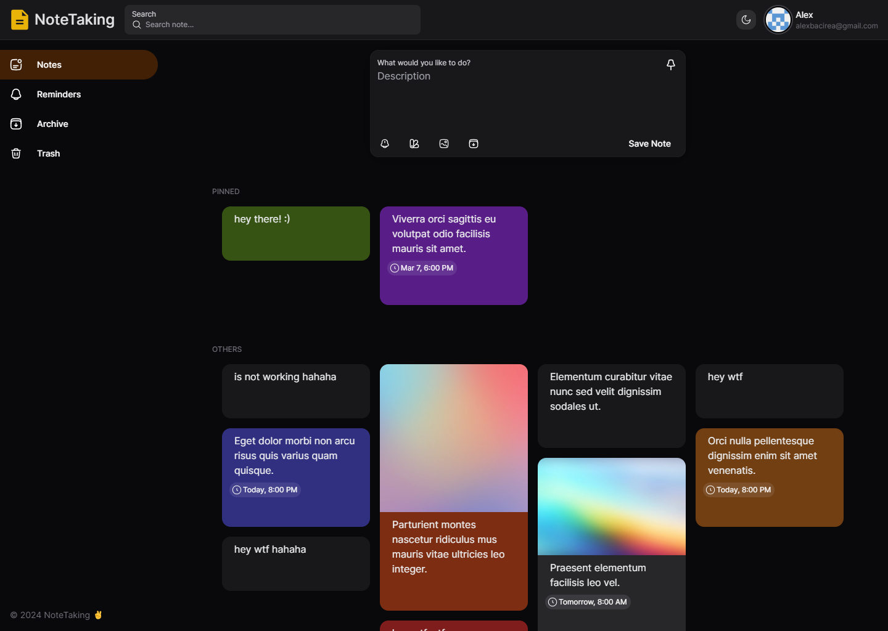
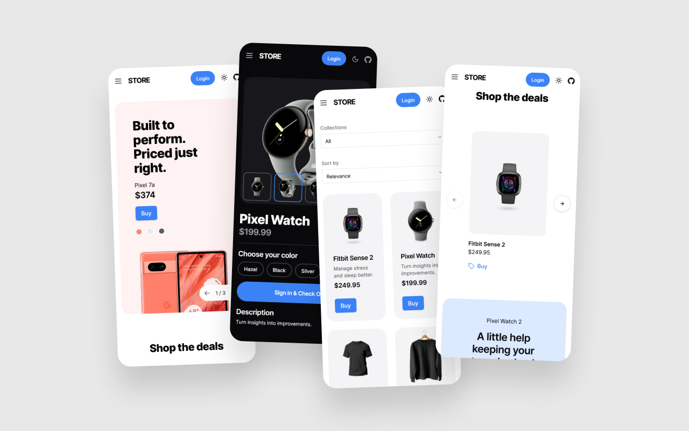
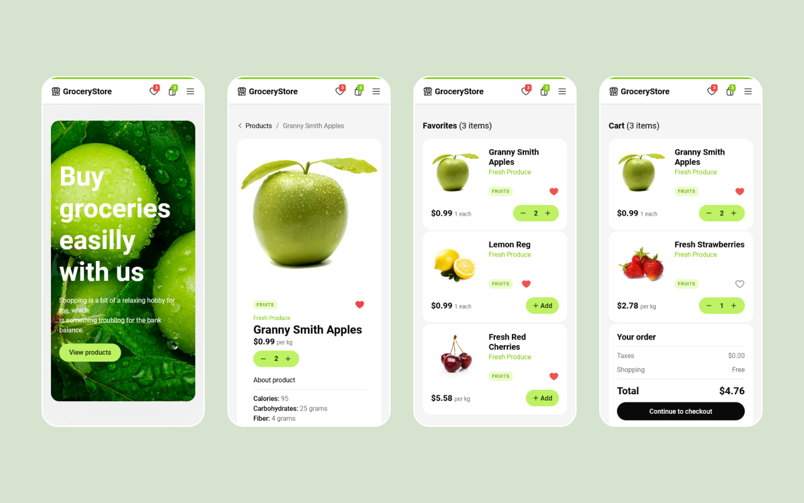

Hey, I'm Alex — Curious about programming and always looking to learn something new. I love creating things and chilling out with some music. And I also drink lots of coffee.
On right are a few things I've build so far (or it's work in progress...) that I'm pretty pleased with. Hope you like them too!
It will be nice to hear from you!
You can find me on
Github
,
or send me an email at
alexbacirea@gmail.com.
Just my boring pesonal website.
© 2024 Alex.



